리눅스마스터-1급 (2014-09-13 기출문제)
1과목: 리눅스 실무의 이해
1. 운영체제의 유형에 대한 설명으로 틀린 것은?
- Multi-user : 단일 시스템에서 여러 사용자의 프로그램이 실행되는 형태
- Multi-tasking : 한 사용자가 여러 개의 작업을 동시에 수행하는 시스템
- Single-tasking : 컴퓨터가 한 번에 하나의 작업만 처리하는 형태
- Multi-switching : 다수의 작업이 동시 실행 되나 백그라운드 프로그램만 동작하는 형태
(정답률: 77%)

2. 다음 중 리눅스 운영체제의 특징으로 알맞은 것은?
- 오직 인텔계열의 프로세서에서만 동작할 수 있다.
- TCP/IP 뿐만 아니라 IPX/SPX, Appletalk, SLIP, PPP, Bluetooth 등의 여러 가지 네트워크 프로토콜을 지원한다.
- 유닉스의 소스코드를 전혀 사용하지 않고 개발 되었기 때문에, POSIX 표준과는 호환되지 않는다.
- 콘솔은 물리적인 모니터를 가진 1개의 화면에서만 사용할 수 있으며, 더 이상의 콘솔화면은 지원되지 않는다.
(정답률: 74%)
3. 다음 중 리눅스 배포판으로 틀린 것은?
- Redhat
- Caldera
- GNOME
- Mandrake
(정답률: 74%)
4. 다음 중 GNU/FSF(자유소프트웨어재단)에서 규정한 자유소프트웨어의 조건에 해당하는 소프트웨어로 가장 거리가 먼 것은?
- Microsoft Office
- Apache HTTPD Server
- Emacs
- GIMP
(정답률: 79%)
5. 다음 운영체제의 기능 중 한 사용자가 여러 개의 작업을 처리함을 의미하는 용어로 알맞은 것은?
- 다중교환(Multi-switching)
- 다중처리(Multi-Processing)
- 다중작업(Multi-tasking)
- 병렬계산(Parallel-Processing)
(정답률: 68%)
6. 다음 명령어는 현재 파일시스템 사용량을 현재 날짜와 시간의 이름으로 저장하는 내용이다. 빈칸에 들어갈 내용으로 알맞은 것은?(현재시간은 2014년 12월 31일 12시 정각이다)
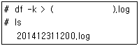
- "date +$YY$m$d$H$M"
- `date +$YY$m$d$H$M`
- "date +%Y%m%d%H%M"
- `date +%Y%m%d%H%M`
(정답률: 55%)
7. 다음 RAID(Redundant Array of Independent Disks) 레벨 중 내결함성(Fault-Tolerant) 기능을 제공하지 않으면서 가장 높은 용량을 제공하는 형태로 알맞은 것은?
- RAID 0
- RAID 1
- RAID 0+1
- RAID 1+0
(정답률: 66%)
8. 다음 중 리눅스의 부팅과정에서 가장 나중에 실행 되는 스크립트 파일로 알맞은 것은?
- /etc/rc.d/rc.local
- /etc/rc.d/rc1.d 디렉토리 안의 S로 시작하는 스크립트 파일
- /etc/rc.d/rc6.d 디렉토리 안의 S로 시작하는 스크립트 파일
- /etc/rc.d/rc.sysinit
(정답률: 69%)
9. 리눅스 파일시스템에서 ext4를 설명하는 특징으로 틀린 것은?
- 기존 ext2 파일시스템의 단점을 보완하기 위한 저널링(Journaling) 기술이 포함되어있다.
- 기존 ext3 파일시스템을 ext4 파일시스템으로 마이그레이션 할 수 있다.
- ext4 파일시스템의 최대크기는 16TiB(테비바이트) 이며, 최대파일크기는 2TiB를 지원한다.
- ext4 파일시스템의 서브디렉토리 생성가능 개수는 ext3의 3200개에서 늘어난 65536개까지 생성이 가능하다.
(정답률: 53%)
10. 다음 중 리눅스 시스템에 문제가 발생하여 싱글 유저모드로 부팅하고자 할 때 grub 부트로더에서 작업해야할 순서로 알맞은 것은?
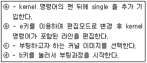
- ⓒ - ⓑ - ⓐ - ⓓ
- ⓒ - ⓐ - ⓑ - ⓓ
- ⓓ - ⓒ - ⓑ - ⓐ
- ⓓ - ⓒ - ⓐ - ⓑ
(정답률: 60%)
11. 리눅스 환경에서 httpd 프로세스의 리스트를 검색한 결과 다음과 같이 11671 프로세스를 부모로 가지는 자식 프로세스가 다수 검출되었다. 이를 설명하는 용어로 알맞은 것은?
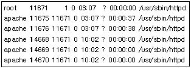
- process clone
- zombie process
- process fork
- multi process
(정답률: 65%)
12. 리눅스 시스템에서 GRUB이 손상되어 부팅이 되지 않아 CD-ROM으로 부팅하여 복구모드를 수행하였다. 다음 중 GRUB을 복구하기 위한 명령어로 알맞은 것은? (단, 하드디스크는 Serial-Attached-SCSI 방식 이며 1개의 디스크만 설치되어 있다.)
- grub-install /dev/hda
- grub-install /dev/sda
- grub-recover /dev/hda
- grub-recover /dev/sda
(정답률: 48%)
13. 리눅스시스템이 현재 CLI(Command-Line-Interface) 만을 지원하고 있다. 다음 부팅시 자동으로 그래픽 환경을 사용하고자할 때 편집하여야 할 파일로 알맞은 것은?
- /etc/initmode
- /etc/initgui
- /etc/initboot
- /etc/inittab
(정답률: 69%)
14. 다음 중 명령어의 결과 Run Level이 다른 것으로 알맞은 것은?
- init 6
- halt
- reboot
- shutdown -r
(정답률: 71%)
15. 다음 디렉토리 중 하드디스크에 저장되어 있지 않으며 여러 물리장치들의 상태정보와 커널파라미터 등을 표시하는 파일들이 위치한 곳으로 알맞은 것은?
- /proc
- /dev
- /var
- /etc
(정답률: 56%)
16. 다음은 TCP/IP 모델에서 Client와 Server간의 회선 흐름도 이다. 빈칸에 들어갈 내용으로 알맞은 것은? (a-b-c-d 순)
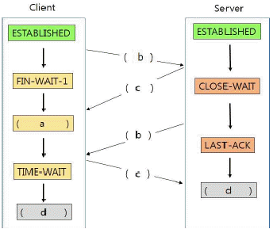
- FIN-WAIT-2 - ACK - FIN - CLOSED
- FIN-WAIT-2 - FIN - ACK - CLOSED
- FIN-CLOSED - ACK - FIN - UNESTABLISHED
- FIN-CLOSED - FIN - ACK - UNESTABLISHED
(정답률: 56%)
17. 리눅스 환경에서 httpd 프로세스가 LISTENING 중인 TCP 포트번호를 확인하고자 할 때 사용할 수 있는 명령어로 알맞은 것은? (명령어의 결과는 다음과 같다.)
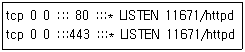
- netstat -ano | grep httpd
- netstat -ant | grep httpd
- netstat -anl | grep httpd
- netstat -anp | grep httpd
(정답률: 41%)
18. 다음 설명이 가리키는 용어로 알맞은 것은?
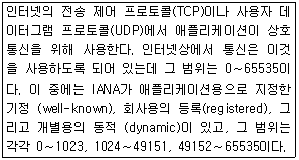
- IP Address
- MAC Address
- Port Number
- TCP/UDP Application Number
(정답률: 69%)
19. 다음 중 IP 주소에 대한 별칭을 설정하는 파일과 도메인 질의를 위해 DNS 서버를 등록하는 파일 조합으로 알맞은 것은?
- /etc/hosts, /etc/resolv.conf
- /etc/hosts, /etc/host.conf
- /etc/resolv.conf, /etc/host.conf
- /etc/host.conf, /etc/services
(정답률: 66%)
20. 다음 중 ifconfig 명령에 대한 설명으로 알맞은 것은?
- ifconfig 명령으로 설정한 정보는 자동으로 파일에 저장되어 재부팅 시에도 적용된다.
- IP주소, Default Gateway 주소, DNS서버 주소의 설정을 모두 할 수 있다.
- -a 옵션을 사용하면 설치는 되어있으나 현재 설정되어 있지 않은 네트워크 인터페이스 카드의 정보도 볼 수 있다.
- MAC Address의 정보는 보여주지 않는다.
(정답률: 57%)
2과목: 리눅스 시스템 관리
21. 다음 중 root 사용자의 UID값으로 알맞은 것은?
- 0
- 1
- 500
- 1000
(정답률: 71%)
22. 다음 중 /etc/passwd에서 UID를 나타내는 필드로 알맞은 것은?
- 첫 번째 필드
- 두 번째 필드
- 세 번째 필드
- 네 번째 필드
(정답률: 65%)
23. 다음과 같이 useradd 명령을 특별한 옵션없이 실행했을 경우에 참고하는 파일로 알맞은 것은?
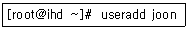
- /etc/passwd
- /etc/skel
- /etc/default/useradd
- /etc/fstab
(정답률: 52%)
24. 다음은 새로운 디스크를 추가한 후 사용하기 까지의 순서로 가장 알맞은 것은?
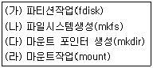
- (나) - (가) - (라) - (다)
- (라) - (다) - (나) - (가)
- (다) - (나) - (가) - (라)
- (가) - (나) - (다) - (라)
(정답률: 71%)
25. 다음 중 사용자 관련 명령어의 설명으로 알맞은 것은?
- passwd : 사용자 전환할 때 사용한다.
- chage : 암호를 변경할 때 사용한다.
- userdel : 사용자를 삭제할 때 사용한다.
- su : 파일의 퍼미션을 변경할 때 사용한다.
(정답률: 72%)
26. 다음 중 사용자가 회사 내 부서 이동으로 인해 소속 그룹(Primary Group)의 변경하려고 할 때 사용하는 명령어로 알맞은 것은?
- chgrp
- usermod
- groupmod
- chage
(정답률: 54%)
27. 명령의 결과가 아래와 같다. 다음 중 관련 설명으로 틀린 것은?
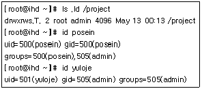
- yuloje가 /project 디렉토리에 파일을 생성하면 그룹소유권은 admin이다.
- posein이 /project 디렉토리에 파일을 생성하면 그룹소유권은 posein이다.
- /project 디렉토리는 admin 그룹에 속한 사용자 이외에는 접근이 불가하다.
- yuloje는 posein이 만든 파일을 삭제할 수 없다.
(정답률: 40%)
28. 다음 중 스왑(Swap) 파일 생성 절차로 알맞은 것은?
- mkfs -> mkswap -> swapon
- mkfs -> swapon -> mkswap
- dd -> mkswap -> swapon
- dd -> swapon -> mkswap
(정답률: 64%)
29. 다음 중 /etc/fstab 파일의 첫 번째 필드에 설정 가능한 값으로 틀린 것은?
- 장치파일명
- UUID
- 마운트포인트
- 라벨명
(정답률: 60%)
30. 다음 조건에 맞게 수행하려고 할 때 사용하는 명령어 조합으로 가장 알맞은 것은?
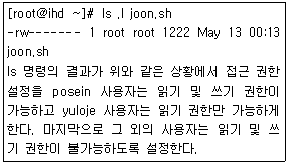
- chown, chgrp
- lsattr, chattr
- chgrp, chmod
- getfacl, setfacl
(정답률: 42%)
31. 다음은 프로세스 전환 절차이다. 다음 ( 괄호 ) 안에 들어갈 내용으로 알맞은 것은?
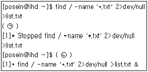
- (ㄱ): [Ctrl]+[c] (ㄴ): fg
- (ㄱ): [Ctrl]+[z] (ㄴ): fg
- (ㄱ): [Ctrl]+[c] (ㄴ): bg
- (ㄱ): [Ctrl]+[z] (ㄴ): bg
(정답률: 56%)
32. nice 명령을 이용하여 우선 순위를 변경하려고 한다. 다음 중 설정 가능한 NI값의 범위로 알맞은 것은?
- 20 ∼ -19
- -20 ∼ 19
- -19 ∼ 20
- 19 ∼ - 20
(정답률: 61%)
33. 다음 중 명령을 실행중인 터미널이 중단되더라도 계속적으로 해당 프로세스가 실행되도록 할 때 사용하는 명령어로 알맞은 것은?
- bg
- jobs
- nohup
- fg
(정답률: 64%)
34. 다음 ( 괄호 ) 안에 들어갈 내용으로 알맞은 것은?
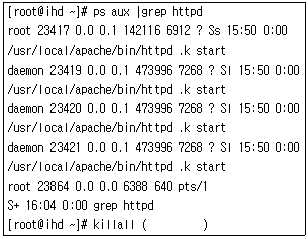
- 23417
- 23417 23419 23420 23421
- 23864
- httpd
(정답률: 67%)
35. 다음 중 rpm 명령어를 이용하여 ftp 서버의 패키지를 설치할 때 사용하는 명령으로 알맞은 것은? (단, 다음과 같은 조건을 만족해야 한다.)
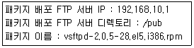
- rpm -ftp ftp://192.168.10.1/pub/vsftpd-2.0.5-28.el5.i386.rpm
- rpm -a ftp://192.168.10.1/pub/vsftpd-2.0.5-28.el5.i386.rpm
- rpm -f ftp://192.168.10.1/pub/vsftpd-2.0.5-28.el5.i386.rpm
- rpm -i ftp://192.168.10.1/pub/vsftpd-2.0.5-28.el5.i386.rpm
(정답률: 64%)
36. 다음은 시스템에 설치된 rpm 패키지 중에 mail 이라는 문자열이 들어있는 패키지만 검색하려고 한다. ( 괄호 )안에 들어갈 내용으로 알맞은 것은?
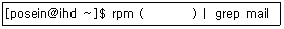
- -ql
- -qi
- -qa
- -qe
(정답률: 56%)
37. 다음은 ( 괄호 )안에 들어갈 내용으로 알맞은 것은?
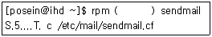
- -qc
- -qv
- -q
- -V
(정답률: 48%)
38. 다음 중 yum을 사용하여 현재 시스템에 설치된 패키지 목록만을 확인 명령으로 알맞은 것은?
- yum list install
- yum list installed
- yum list available
- yum available list
(정답률: 59%)
39. 다음에서 설명하는 내용으로 알맞은 것은?
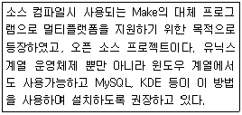
- qcc
- automake
- cmake
- pacemaker
(정답률: 63%)
40. 다음은 ( 괄호 )안에 들어갈 내용으로 알맞은 것은?
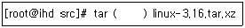
- Zxvf
- zxvf
- jxvf
- Jxvf
(정답률: 53%)
41. 리눅스시스템에서 LVM(Logical Volume Manager)로 구성된 /home 디렉토리의 용량이 부족하여 추가로 디스크를 구성하여 용량을 늘리고자 한다. 이 작업에 해당되는 순서로 알맞은 것은?
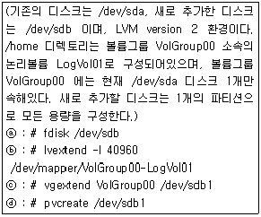
- ⓐ - ⓑ - ⓒ - ⓓ
- ⓐ - ⓓ - ⓑ - ⓒ
- ⓐ - ⓓ - ⓒ - ⓑ
- ⓐ - ⓑ - ⓓ - ⓒ
(정답률: 48%)
42. 커널 컴파일을 위한 다음 과정에 대한 설명 중 틀린 것은?
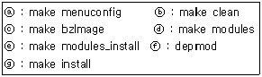
- ⓐ : make xconfig 명령어로 대체하면 X-window 환경에서 작업할 수 있다.
- ⓒ : 커널이미지를 생성한다. 생성된 커널 이미지는 이후 e 과정에서 압축처리된다.
- ⓑ ~ ⓔ 까지의 과정을 make all 명령어로 한꺼번에 수행할 수도 있다.
- ⓖ : 커널파일을 /boot 디렉토리로 복사한다.
(정답률: 37%)
43. 리눅스 환경에서 네트워크 인터페이스 카드 2개로 이중화 구성을 하기 위하여 bond0 인터페이스를 정의하였다. 이후 /etc/modprobe.conf 파일에 다음과 같은 내용을 추가하였다. bond0 인터페이스를 실제 생성하기 위한 명령어로 알맞은 것은? (단, 명령어를 실행하는 작업 디렉토리에는 파일이 존재하지 않는다.)
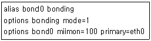
- insmod bond0
- insmod bonding
- modprobe -r bonding
- modprobe .l bonding
(정답률: 38%)
44. 다음 중 리눅스에서 지원하는 하드웨어에 대한 설명으로 틀린 것은? (리눅스는 최신버전의 커널이 설치되어있는 것으로 간주한다.)
- Sun SPARC, IBM Power-PC 등의 인텔계열이 아닌 프로세서도 지원된다.
- 64bit 운영체제의 경우 4GB 이상의 메모리도 지원할 수 있다.
- DVD-ROM 광학드라이브는 IDE/SCSI방식은 지원되지만 USB와 같은 포터블 인터페이스 방식으로는 지원되지 않는다.
- 하드웨어를 손쉽게 사용할 수 있도록 Plug -and - Play를 지원한다.
(정답률: 63%)
45. 리눅스시스템에서 VGA 그래픽 콘솔 등이 사용 불가한 상태에서 RS-232C 인터페이스로 물리 콘솔을 이용하고자 할 때 사용되는 장치파일로 알맞은 것은?
- /dev/sdb
- /dev/rs232c
- /dev/rmt0
- /dev/ttyS0
(정답률: 42%)
46. 리눅스시스템에서 하드디스크를 추가하여 사용 하고자 한다. 사용목적에 맞는 명령어와 그 옵션으로 짝지은 것으로 알맞은 것은?
- 디스크 포맷 - fdisk , Command 프롬프트에서 f
- 디스크파티션생성- fdisk , Command 프롬프트에서 p
- /dev/sda2 파티션을 swap 장치로 지정 - swapon /dev/sda2
- /dev/sda1 파티션을 강제로 마운트 - mount -f /dev/sda1
(정답률: 37%)
47. 메모리에 적재된 모듈의 리스트에 변경을 가할 수 없는 명령어로 알맞은 것은?
- lsmod
- insmod
- rmmod
- modprobe
(정답률: 54%)
48. 리눅스시스템에 사운드카드가 설치되어있지 않아, 커널컴파일을 수행할 때 사운드카드 관련 모듈을 제외하고자 한다. 이 때 사용할 수 있는 명령어로 틀린 것은?
- make config
- make menuconfig
- make xconfig
- make modules_install
(정답률: 48%)
49. 리눅스 시스템에서 하드디스크를 추가하여 파티션을 생성한 후 swap 장치로 사용하고자 한다. 이때 사용할 수 있는 fdisk 명령어의 옵션을 순서대로 나열한 것은?
- fdisk - n - t - w
- fdisk - t - n - w
- fdisk - n - t - q
- fdisk - t - n - q
(정답률: 49%)
50. 다음 중 리눅스 시스템 디렉토리 구조에 해당 되는 영역으로 알맞은 것은?
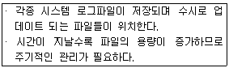
- /var 하위 디렉토리
- /sys 하위 디렉토리
- /dev 하위 디렉토리
- /home 하위 디렉토리
(정답률: 62%)
51. SSH를 이용하여 서버에 접근한 기록을 확인하려고 한다. 다음 중 해당 정보가 기록된 로그 파일로 알맞은 것은?
- /var/log/messages
- /var/log/dmesg
- /var/log/secure
- /var/log/boot.log
(정답률: 63%)
52. 텔넷이나 SSH를 이용하여 서버에 접근한 기록 중 접속에 실패할 기록을 확인하려고 한다. 다음 중 해당 정보를 출력하는 명령어로 알맞은 것은?
- last
- lastb
- logname
- nologin
(정답률: 61%)
53. 다음 조건에 맞게 cron 설정을 하려고 할 때 알맞은 것은?
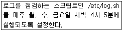
- 4 5 * * 1,3,5 /etc/log.sh
- 5 4 * * 1,3,5 /etc/log.sh
- 4 5 * * 0,2,4 /etc/log.sh
- 5 4 * * 0,2,4 /etc/log.sh
(정답률: 63%)
54. 다음 설명으로 알맞은 것은?
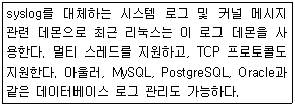
- rsyslog
- ksyslog
- msyslog
- nsyslog
(정답률: 60%)
55. 다음 상황에 사용해야할 방법으로 가장 알맞은 것은?
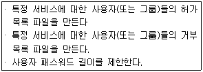
- PAM
- SELinux
- 쉐도우 패스워드
- sudo
(정답률: 55%)
56. 다음 상황에 필요한 보안도구로 알맞은 것은?
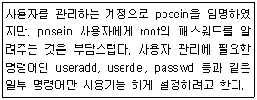
- PAM
- COPS
- Tripwire
- sudo
(정답률: 53%)
57. 다음 중 보안을 강화하기 위한 기존의 사용하던 명령어를 SSH 기반으로 대체하려고 할 때 틀린 것은?
- 원격 복사 작업 시 rcp대신에 scp를 사용한다.
- 파일 전송 시 ftp대신에 sftp를 사용한다.
- 원격 서버 접속 시 telnet대신에 ssh를 사용한다.
- 원격의 X 서버에 접속 시에 xauth 대신에 ssh-keygen을 사용한다.
(정답률: 53%)
58. 다음 중 백업 방법에 대한 설명으로 틀린 것은?
- 백업 데이터는 동일한 시스템 내에 보관한다.
- 자료의 가치에 따라 다른 백업 전략을 세운다.
- 오랫동안보관하기 위해서는백업테이프를 사용한다.
- 중요한 백업 자료는 암호화한다.
(정답률: 66%)
59. 다음 중 dump로 백업한 내용을 복원할 때 사용하는 명령어로 알맞은 것은?
- rdump
- rdist
- restore
- rsync
(정답률: 59%)
60. 다음은 cpio를 이용하여 백업하는 과정이다. ( 괄호 ) 안에 들어갈 내용으로 알맞은 것은?
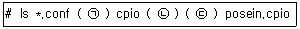
- (ㄱ) | (ㄴ) -icv (ㄷ) >
- (ㄱ) > (ㄴ) -icv (ㄷ) |
- (ㄱ) | (ㄴ) -ocv (ㄷ) >
- (ㄱ) > (ㄴ) -ocv (ㄷ) |
(정답률: 45%)
3과목: 네트워크 및 서비스의 활용
61. 다음에서 설명하는 내용으로 가장 알맞은 것은?
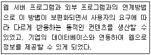
- TML
- CGI
- NCSA
- URI
(정답률: 50%)
62. 다음은 telnet 명령어를 이용하여 운영중인 웹 서버의 정보를 얻는 과정이다. 다음 ( 괄호 )안에 들어갈 HTTP 요청 메소드(Method)로 알맞은 것은?
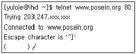
- GET
- POST
- HEAD
- PUT
(정답률: 49%)
63. 다음 그림의 상황에 해당하는 HTTP 응답 오류코드 번호로 알맞은 것은?
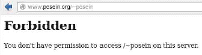
- 401
- 402
- 403
- 404
(정답률: 51%)
64. 아파치 2.x 버전을 소스 컴파일을 통한 설치시 아파치 프로세스를 스레드(Thread)방식으로 동작 되도록 설정하려고 한다. 다음 중 환경설정 (configure)시에 지정하는 --with-mpm의 값으로 알맞은 것은?
- winnt
- thread
- prefork
- worker
(정답률: 45%)
65. 다음 중 PHP 5 버전을 소스 설치했을 때 생성 되는 모듈 파일명으로 알맞은 것은?
- mod_php5.so
- mod_libphp5.so
- libphp5.so
- libphp5_mod.so
(정답률: 37%)
66. 다음 중 ( 괄호 )안에 들어갈 내용으로 알맞은 것은?
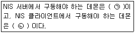
- (ㄱ) ypbind - (ㄴ) ypserv
- (ㄱ) ypbind - (ㄴ) ypxfrd
- (ㄱ) ypserv - (ㄴ) yppasswd
- (ㄱ) ypserv - (ㄴ) ypbind
(정답률: 56%)
67. 다음 중 마이크로소프트사의 액티브 디렉토리(Active Directory)와 가장 관계가 깊은 서비스로 알맞은 것은?
- NIS
- NFS
- LDAP
- SAMBA
(정답률: 44%)
68. 다음 중 NIS 서버에서 데이터베이스 갱신 시에 생성되는 파일로 사용자의 계정 정보를 담고 있는 파일로 알맞은 것은?
- passwd.byid
- passwd.byname
- passwd.id
- passwd.name
(정답률: 45%)
69. 다음 중 NIS 클라이언트에서 NIS 서버의 이름과 관련된 맵 파일을 찾으려고 할 때 사용하는 명령어로 알맞은 것은?
- ypserv
- ypcat
- ypwhich
- ypbind
(정답률: 46%)
70. 다음은 LDAP 클라이언트에서 ldap을 사용가능 하게 설정되어 있는지 확인하는 절차이다. ( 괄호 ) 안에 들어갈 파일명으로 알맞은 것은?
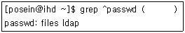
- /etc/host.conf
- /etc/nsswitch.conf
- /etc/openldap/slapd.conf
- /etc/openldap/ldap.conf
(정답률: 25%)
71. 다음 중 삼바(Samba)의 환경설정 파일인 smb.conf 파일을 점검할 때 사용하는 명령으로 알맞은 것은?
- smbrun
- smbstatus
- nmblookup
- testparm
(정답률: 47%)
72. 다음 중 삼바 서버에 접속 가능한 클라이언트의 네트워크 대역을 지정할 때 사용하는 smb.conf의 항목으로 알맞은 것은?
- allow hosts
- hosts allow
- access hosts
- hosts access
(정답률: 39%)
73. NFS 서버에 공유된 디렉토리에 접근 가능한 클라이언트가 192.168.12.0 네트워크 대역을 사용하는 시스템으로 제한되어 있다. 다음 ( 괄호 ) 안에 설정된 내용으로 알맞은 것은?
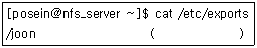
- 192.168.12
- 192.168.12.
- 192.168.12.0
- 192.168.12.0/24
(정답률: 48%)
74. 다음은 NFS 서버에서 공유가 설정된 디렉토리 및 클라이언트를 확인하는 명령이다. ( 괄호 ) 에 들어갈 내용으로 알맞은 것은?
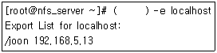
- showmount
- nfsstat
- exportfs
- rpcinfo
(정답률: 36%)
75. 다음 중 vsftpd 서버에 접속할 수 있는 클라이언트의 수를 제한하려고 할 때 설정하는 항목으로 알맞은 것은?
- maxclients
- max_clients
- MaxClients
- MaxInstances
(정답률: 44%)
76. 다음 중 메일 서버와 메일 서버 간에 사용되는 프로토콜로 가장 알맞은 것은?
- SMTP
- IMAP
- POP3
- https
(정답률: 56%)
77. 발신자가 spammer@aol.com인 메일의 수신을 거부하는 설정을 /etc/mail/access에 등록하려고 한다. 다음 설정 중에 가장 알맞은 것은?
- Connect:spammer@aol.com REJECT
- From:spammer@aol.com REJECT
- Connect:spammer@aol.com RELAY
- From:spammer@aol.com RELAY
(정답률: 53%)
78. 다음 중 /etc/mail/access 파일 변경후에 실행하는 명령으로 알맞은 것은?
- makemap hash
- mailq
- newaliases
- aliases
(정답률: 35%)
79. 다음 설명과 가장 관계가 깊은 파일로 알맞은 것은?
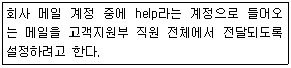
- /etc/mail/access
- /etc/mail/localhost-host-names
- /etc/mail/virtusertable
- /etc/aliases
(정답률: 42%)
80. 다음 중 메일 관련 설정파일과 관련 명령어 조합으로 틀린 것은?
- /etc/mail/sendmail.mc - m4
- /etc/mail/virtusertable . makemap hash
- /etc/mail/local-host-names . makehap hash
- /etc/aliases . newaliases
(정답률: 38%)
81. 다음 설명으로 가장 알맞은 것은?
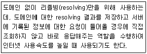
- Primary Name Server
- Secondry Name Server
- Caching Name Server
- Master Name Server
(정답률: 56%)
82. 다음은 DNS 서버의 /etc/named.conf 파일의 일부이다. 다음 ( 괄호 )안에 들어갈 내용으로 알맞은 것은?
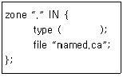
- master
- slave
- caching
- hint
(정답률: 42%)
83. 다음은 DNS 서버의 zone 파일의 일부이다. 다음 ( 괄호 )안에 들어갈 내용으로 알맞은 것은?
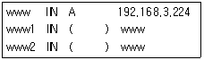
- A
- PTR
- CNAME
- AAAA
(정답률: 52%)
84. 다음은 새롭게 설정한 DNS 서버의 리졸빙(resolving)기능을 점검하기 위해 네임 서버의 설정을 변경하는 단계이다. ( 괄호 )안에 들어갈 내용으로 알맞은 것은?
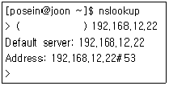
- server
- type=server
- set type=server
- nameserver
(정답률: 36%)
85. 다음 중 DNS 서버의 환경설정파일을 검증하는 명령어로 가장 알맞은 것은?
- named-checkconf
- named-checkzone
- dig
- rndc
(정답률: 49%)
86. 다음은 네임서버 존 파일의 정의 항목 설명으로 틀린 것은?
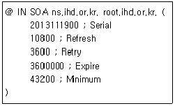
- Refresh : 주네임서버와 보조네임서버간의 정보 동기화를 위한 시간을 지정
- Serial : zone 파일이 작성된 시간을 표시하는 정보 영역
- Expire : 주네임 서버에서 다른 네임 서버로 데이터가 전달되었을 때 데이터를 상대편 서버에 정보가 보관되는 시간
- Retry : 주네임서버와 정보 동기화를 실패 하였을 때 다음 시도를 위해 대기하는 시간
(정답률: 45%)
87. 다음 중 리눅스 가상화 기술인 KVM에 대한 설명으로 틀린 것은?
- KVM은 초기에 전가상화 방식을 사용하여 개발한 하이퍼바이저이다.
- KVM은 Disk I/O의 반가상화를 지원한다.
- KVM은 QEMU 방식을 사용한다.
- KVM은 CPU의 반가상화를 지원한다.
(정답률: 38%)
88. 다음 중 KVM 기반으로 생성되는 게스트 머신의 가상화 디스크 이미지가 저장되는 디렉토리 경로로 알맞은 것은?
- /usr/local/libvirt/images
- /var/lib/libvirt/images
- /usr/lib/libvirt/images
- /home/libvirt/images
(정답률: 36%)
89. 다음 중 하이퍼바이저 기반으로 생성되는 가상 머신의 수에 가장 큰 영향을 주는 항목으로 알맞은 것은?
- 메모리량
- 하드디스크 용량
- CPU 코어 수
- 이더넷 카드의 수
(정답률: 45%)
90. 다음 중 실시간으로 가상 머신별로 자원 사용률을 모니터링 할 때 사용하는 명령으로 알맞은 것은?
- libvirt
- virsh
- virt-top
- sar
(정답률: 52%)
91. xinetd기반의 텔넷 서비스를 활성화하려고 한다. 다음 중 /etc/xinetd.d/telnet에 설정하는 관련 값으로 알맞은 것은?
- disable = no
- disable = yes
- enable = no
- enable = yes
(정답률: 46%)
92. 다음의 경우에 구축하면 유용한 서버로 알맞은 것은?
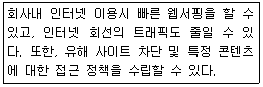
- NTP 서버
- DHCP 서버
- PROXY 서버
- VNC 서버
(정답률: 57%)
93. 다음은 DHCP 서버에서 특정 호스트에게 고정된 IP 주소를 할당하기 위한 설정이다. ( 괄호 )안에 들어갈 내용으로 알맞은 것은?
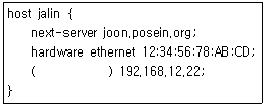
- ip-address
- host-address
- mac-address
- fixed-address
(정답률: 49%)
94. 다음은 VNC 서버 설정파일의 일부이다. ( 괄호 ) 안에 들어갈 내용으로 알맞은 것은?
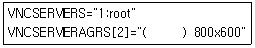
- -geometry
- -nolisten
- -nohttpd
- -localhost
(정답률: 49%)
95. 다음은 NTP 서버 설정파일인 /etc/ntpd.conf의 내용이다. ( 괄호 )안에 들어갈 내용으로 알맞은 것은?
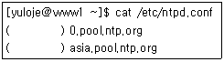
- ntp
- server
- time
- date
(정답률: 42%)
96. 다음 중 DoS 공격의 유형이 나머지 셋과 다른 것으로 알맞은 것은?
- 디스크 채우기
- 메모리 고갈
- Mail Storm
- 프로세스 만들기
(정답률: 48%)
97. 다음에서 설명하는 상황과 가장 밀접한 침해유형으로 알맞은 것은?
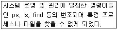
- 웜(Worm)
- 바이러스(Virus)
- 도스 공격(Dos Attack)
- 트로이목마(Trojan Horse)
(정답률: 43%)
98. 다음 중 특정 서비스에 대해서 IP 주소 기반으로 접근을 차단하는 역할을 수행하는 것으로 틀린 것은?
- xauth
- xhost
- tcp_wrapper
- iptables
(정답률: 31%)
99. 로그를 분석해보니 특정 IP 주소에서 ssh 포트로 무작위 대입을 통한 접근 기록을 발견하였다. 다음 중 해당 IP 주소를 차단하는 방법으로 가장 알맞은 것은?
- Tripwire를 설치하여 차단한다.
- John The Ripper라는 도구를 설치하여 차단한다.
- /etc/hosts.deny 파일에 해당 IP주소를 등록한다.
- Nessus를 설치하여 차단한다.
(정답률: 50%)
100. 다음 설명으로 알맞은 것은?
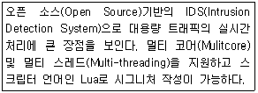
- Snort
- Suricata
- netfilter
- nmap
(정답률: 46%)